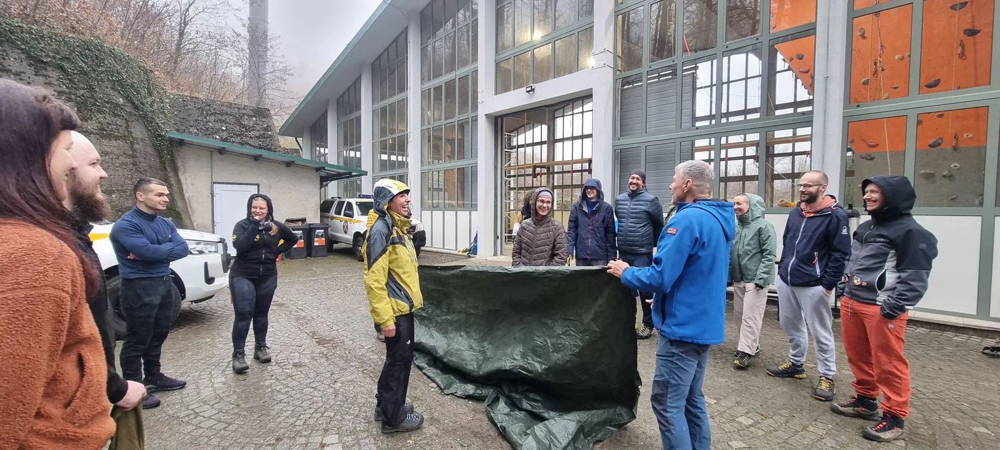

(Op!) Žica, žica, žica... & 55. školica
Drugi terenski vikend ove naše (55.) speleoškole bio je dosta drugačiji od prethodnog. Teren nam je bilo Sljeme, a budući da većina nas školaraca (i instruktora) živi u Zagrebu, ovaj vikend, nažalost, nismo zajedno…

Napisala: Ana Horvat (OB)
Fotografije: Arhiva 55. škole, Ana Marija, Petra, Marin i Tomislav
Drugi terenski vikend ove naše (55.) speleoškole bio je dosta drugačiji od prethodnog. Teren nam je bilo Sljeme, a budući da većina nas školaraca (i instruktora) živi u Zagrebu, ovaj vikend, nažalost, nismo zajedno noćili u prirodi. Zapravo, više smo vremena proveli u zraku, nego u prirodi. Ili igdje drugdje. Nakon višednevnog praćenja prognoze, naši instruktori su odlučili da prvi dan idemo na Žicu, a drugi na Gorsko zrcalo.
Subota je započela okupljanjem na Stanici dok je kišica lagano sipila. Već tradicionalno, skupili smo svu hranu na jedno mjesto te pripremili dobro poznati švedski stol (nije švedski nego velebitaški, op. adm. :) ) (ovaj put smo stvarno i imali stol!). Ni ovoga puta nije nedostajalo ni slatkih ni slanih delicija – kolača, raznih vrsta kruha, domaćih mesnih delicija, vege namaza, voća, povrća, domaćeg ajvara, sira, zobene kaše… doslovno sve što možeš poželjeti za doručak prije radnog dana.
Nakon što su neki ispili drugu šalicu kave, a drugi pojeli treću posudicu hrane, službeno smo krenuli s danom. Dok su instruktori pripremali vježbe, poznati voditelj team-building aktivnosti Čedo (Josipović) je spremio nekoliko njih i za nas školarce. Stojeći u krugu da se svi dobro vidimo, čujemo i osjetimo laganu kišicu, Čedo nas je razbudio konjičkom utrkom. Nakon uspješne trke, testirao nam je motoričke sposobnosti lijeve i desne ruke poznatom majmunskom vježbicom lupanja po glavi i glađenja trbuha.
Osobno sam jedva čekala takve neke aktivnosti. Da, tek je drugi tjedan školice (kako?:) i imat ćemo još prilike za upoznavanje i povezivanje, no ovakvim se aktivnostima stvaraju posebna atmosfera, energija pa i konekcije među nama. A i osobno smatram da nam kronično nedostaje igre u ovom prosječno ozbiljnom svijetu odraslih. Nakon što nas je Čedo fizički razbudio i zagrijao, sljedeće aktivnosti su bile namijenjene da si zapamtimo imena. A imena su itekako važna kada smo na stijeni ili u špilji i trebamo pomoć jedni drugih. I za kraj, testirao je našu brzinu, motoriku, snalažljivost i međusobnu suradnju. Stojeći u krugu i držeći se za ruke, zadatak nam je bio da spojeno uže pošaljemo cijelim krugom, tako da se naše ruke ni u jednom trenu ne odvoje, a ni da prsti ne pomažu, sve ostalo je bilo dozvoljeno – zubi, šake, glave… Ubrzo smo vidjeli tko naginje ka brzim rješenjima unatoč pravilima. ☺ A da bi nam još malo otežao izazov, poslao je dva spojena užeta različite veličine u krug i mjerio vrijeme. Nakon što su se vratila na početna mjesta, Čedo nam je otkrio da nam je trebalo 6 min i 16 sec za dva puna kruga. Ne tako oduševljeni rezultatom, složili smo se da ćemo na kraju škole pokušati ponovno, brže, naravno.
A nakon igranja slijedilo je učenje. No, prije samih vježbi na užetu, trebali smo se upoznati s osobnom opremom. (Marko) Ličko nam je demonstrirao što se nalazi u našim transportkama, pokazao kako se oblači sigurnosni pojas te što sve i kojim redoslijedom stavljamo na njega. Nakon kratkog upoznavanja s osobnom opremom, imali smo demonstraciju penjanja i spuštanja sa spravicama na užetu. Vjerujem da je i ostalima tada bilo sve dosta zbunjujuće, moj mozak nije mogao procesuirati sve nove (i jako bitne) informacije pa iskreno, nisam zapamtila što nam je bilo rečeno. Što, tješim se, ima smisla jer najbolje učim(o) na vlastitom iskustvu. Koje je i uslijedilo! Edo (Vričić) nas je rasporedio po punktovima tj. različitim vježbama koje smo prolazili s iskusnim instruktorima. Meni je prva vježba na užetu bila s prelaskom uzla. Bila sam vrlo zbunjena, nije mi bilo u potpunosti jasno kako spravice funkcioniraju, kako da ih najlakše otvorim i skinem s jednog užeta kako bih ih mogla staviti na drugo. Tu sam i malo zapela jer mi se dogodilo da sam bloker (spravicu za penjanje) nabila na uzao te mi ga je bilo teško skinuti. Ali sam nekako uspjela. Na početku osim što učimo kako koristiti opremu, učimo i kako ispravno i najefikasnije koristiti svoje tijelo, da se ne umoriš i ne izgubiš energiju koja će ti kasnije trebati (ili težim putem spoznaš do kuda idu tvoje fizičke izdržljivosti).
Osim prelaska uzla, vježbali smo i prelazak sidrišta (uz penjanje skroz do stropa poligona) te spuštanje u „jamu“ (u ovom slučaju podrum)… općenito kako se kretati na užetu sa spravicama, u oba smjera. Ovisno o tome kada je tko bio gotov, mijenjali smo se na punktovima, a učenje o spravicama i tehnikama spuštanja i penjanja je nekima išlo brže, nekima malo sporije, pa smo znali biti na užetu i do sat vremena. Mijenjajući punktove, mijenjali smo i instruktore s kojima smo radili. Mislim da je to odlično jer nitko ne radi i ne objašnjava jednako, od svakoga možeš nešto naučiti.
Osim vježbi na užetu, u subotu smo imali i predavanje iz prve pomoći koje nam je držala Dora (Perinčić) uz Cvitinu (1. god.) asistenciju. Budući da nam je u srijedu predavala o prvoj pomoći u speleologiji, u subotu nam je Dora demonstrirala praktične stvari – na lutki smo vježbali pristup unesrećenoj osobi, trauma pregled, masažu srca i imobilizacije. Također, uz sve nove informacije i vježbe, za vježbanje uzlova se, naravno, uvijek našlo vremena tijekom pauza ili čekanja na red. A za one koji su prošli sve obvezne vježbe na užetu, vani je bila postavljena prečnica. Ja sam bila jedna od onih koji su je mogli isprobati i, iskreno, to mi je bio najizazovniji dio dana. Sunce je već zašlo, kišica je i dalje padala, a moje tijelo je bilo dosta umorno. Uz sve to, na prečnici je potrebno kombinirati sve stvari koje smo taj dan naučili – penjanje, spuštanje, mijenjanje sidrišta i užeta, prelazak uzlova… Dakle malo složeniji zadatak gdje moraš logički razmišljati što i na koji način moraš koristiti. Tek kasnije sam spoznala da sam tu vježbu prolazila totalno neprisutna, zbog čega mi i je bila najteža jer sam se osjećala da nakon cijelog dana, nisam imala pojma što radim. Moram se zahvaliti Tei (Selaković) koja je bila uz mene i s velikom količinom strpljenja pomagala mi da uspješno prođem i ovu vježbu te službeno završim dan.
A kako smo mi polako završavali dan, naši dragi instruktori su nam pripremali večeru. I stvarno, kako su nam i rekli, bilo je motivirajuće ne samo osjetiti miris roštilja, već i činjenica da nas je nakon napornog dana čekala gotova i topla večera. Ubrzo nakon večere i konzultacija s našim voditeljem Edom, svatko (od školaraca) je otišao svojim putem do doma, umornog tijela, ali s puno novih naučenih vještina i znanja.
Drugi dan ovog terenskog vikenda je počeo okupljanjem u caffe baru „Voljeni Vukovar“ na okretištu Dubrava. Unatoč očekivanoj prognozi i nadanjima, padala je kiša i izgledalo je da ne planira stati. Tako da je planirani odlazak na Gorsko zrcalo otkazan. U zadnjem trenu dogovoren je ponovni odlazak na Žicu. Ondje su vježbe imali školarci iz društva “Željezničar”, no budući da ih je bilo malo, našlo se mjesta i za nas. I tako smo imali prilike ponoviti gradivo.
Odvezli smo se do žice i već tradicionalno zajedno doručkovali. (Možda čak i pre) Punih trbuha smo krenuli na vježbe. Ponovili smo sve što smo učili dan prije – penjanje i spuštanje uz pomoć spravica na užetu, prelazak uzlova, prelazak sidrišta, spuštanje u jamu. Potaknuta iskustvom od dana prije, odlučila sam biti prisutnija, sporija i kada dođem do stropa odnosno na visinu (ili dubinu:) na kojoj se ne nalazim često (ili uopće) uživati u pogledu i osjećaju. I stvarno, unatoč upali mišića kakvu nikada do tada nisam imala u životu, vježbe su mi bile ugodnije i više sam uživala. Novi element ovoga dana je bila prečnica, ali unutra, koja je za razliku od one prethodnog dana, bila u zraku i nismo imali „stijenu“ za oslonac, jedino spravice i svoje sposobnosti (i Jelu, naravno!). Ovdje smo također kombinirali sve tehnike koje smo učili, ali smo se i međusobno bodrili te učili jedni od drugih – u kojem trenutku (ne) staviti koju spravicu. Naravno da je bilo grešaka, ali ih i treba biti, iz njih se najbolje uči. Osim vježbi, za vrijeme čekanja na red smo vježbali uzlove, a vježbati uzlove se treba i kad mislimo da smo ih naučili. Kako mi je (Vedran Ferenčak) Fero rekao, kada mislim da sam naučila uzlove, probam ih vezati zatvorenih očiju!
Ovaj radni dan je završio ranije od prethodnog. Nakon ručka i zajedničkog čišćenja, neki su ostali odraditi vježbe koje su ostali dužni, dok su se ostali uputili kućama. I tako je završio drugi terenski vikend. S puno novog znanja, pokojom modricom, užasnom upalom mišića i neprekinutim osjećajem uzbuđenja, popraćen s mišlju “ma je l’ moguće da mi ovo zbilja radimo?”.